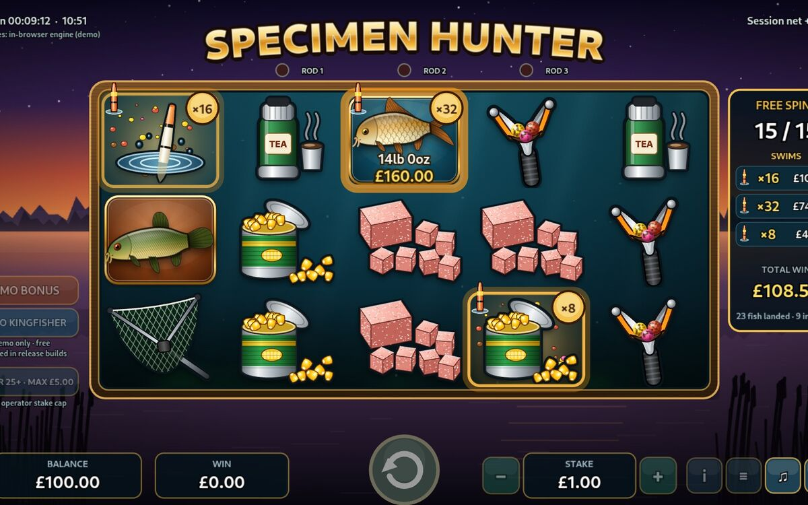

Specimen Hunter
An original British carp-fishing slot game (5 reels, 10 lines) with free spins, baited swims and a kingfisher bonus. It has its own game server with sessions, stake limits and round history, and also ships as a Linux desktop app.
How I checked itAutomated tests cover the game engine and the server API. A Python simulator played 500 million rounds to confirm the game pays out as designed (96.16% return to player), and the JavaScript engine is checked against it.